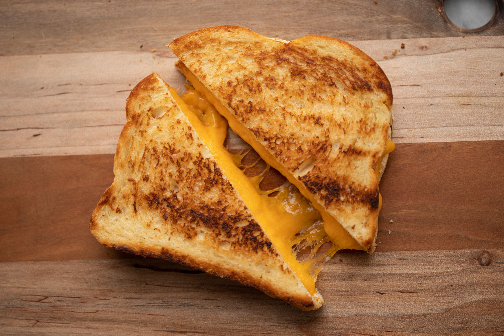

Grilled Cheese Recipe

Description
A grilled cheese is a childhood favorite among mine and millions of others around the world. It can be enjoyed by itself, with a tarty soup, or even as a side to a hotdog!
Ingredients
- Sourdough Bread
- Cheese
- Butter
Steps
- Heat pan to medium heat.
- put two slices between two slices of bread
- add butter to pan and bring heat down to medium
- Place one side of the cheese sandwich onto the pan. Let sit for 3 minutes
- Carefully flip sandwich with spatula, cook for another 3 minutes
- place sandwich on plate. let cool, then enjoy!